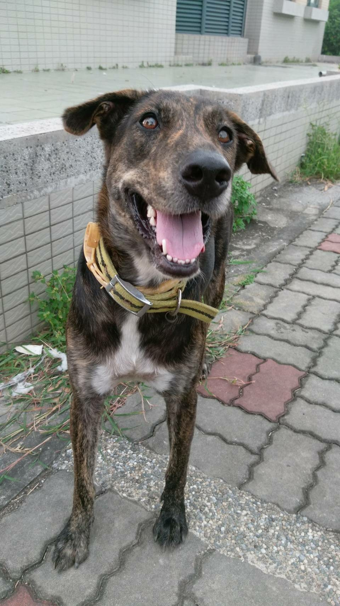
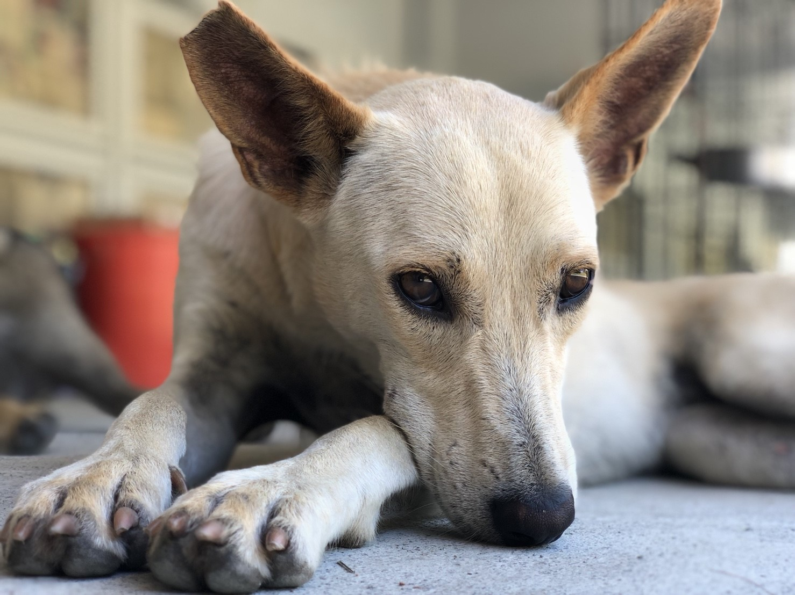
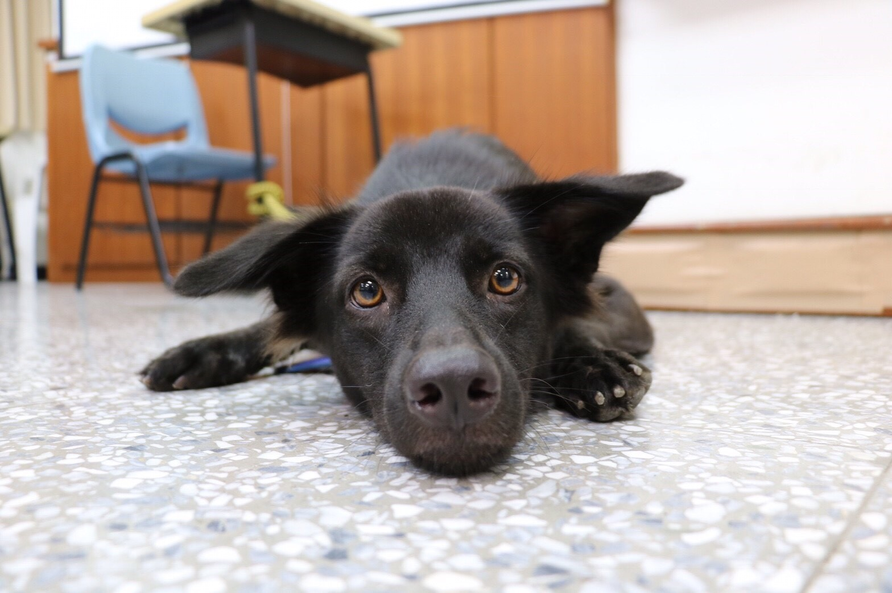

咚咚
年齡：一歲 性別：女生
毛色：橘黃帶黑、易掉毛 項圈：藍色
狐狸犬臉型、柴犬眉毛、精實身材的米克斯。個性活潑開朗，很親人，去年於校內拾獲10隻狗寶寶之一，目前原放於理院後方，閒暇時可以去找她玩，是隻聽得懂自己名字的呆狗狗。
毛色：橘黃帶黑、易掉毛 項圈：藍色
狐狸犬臉型、柴犬眉毛、精實身材的米克斯。個性活潑開朗，很親人，去年於校內拾獲10隻狗寶寶之一，目前原放於理院後方，閒暇時可以去找她玩，是隻聽得懂自己名字的呆狗狗。
小洛
年齡：８個月
性別：男生，已結紮
校外的流浪狗在國立高雄大學校園內生下的小狗，在今年五月的時候被寵物研究社捉起來照顧。
較活潑也親人，在狗園裡就像哥哥一樣陪伴另外兩個妹妹。
性別：男生，已結紮
校外的流浪狗在國立高雄大學校園內生下的小狗，在今年五月的時候被寵物研究社捉起來照顧。
較活潑也親人，在狗園裡就像哥哥一樣陪伴另外兩個妹妹。


小花
性別：女生 體型：偏大型犬
毛色：花色（身體棕色系、胸前有白毛)
項圈：整個變黑黑的項圈+黃色吉樂帶
小花是學校目前體型最大隻的，今年兩歲左右，經過社團近一整年的照顧及陪伴、教導，小花現在非常穩定，常和小不點他們一起行動，在學宿附近常常可以看到他們的身影️❤️
毛色：花色（身體棕色系、胸前有白毛)
項圈：整個變黑黑的項圈+黃色吉樂帶
小花是學校目前體型最大隻的，今年兩歲左右，經過社團近一整年的照顧及陪伴、教導，小花現在非常穩定，常和小不點他們一起行動，在學宿附近常常可以看到他們的身影️❤️
白白
姓名：白白 性別：女生
毛色：白色偏黃 體型：中型犬
項圈：剩吉樂帶
小檔案： 上學期以前的白白非常怕人，但是後來的白白變得非常愛爭寵！在摸其他狗狗的時候白白會一直擠過來呢！遇到不熟識的人還是會顯得有點怕生，要多見幾次才會熟起來！
毛色：白色偏黃 體型：中型犬
項圈：剩吉樂帶
小檔案： 上學期以前的白白非常怕人，但是後來的白白變得非常愛爭寵！在摸其他狗狗的時候白白會一直擠過來呢！遇到不熟識的人還是會顯得有點怕生，要多見幾次才會熟起來！


黑熊
姓名：黑熊 性別：女生
毛色：黑色、蓬鬆長毛
年齡：三歲左右
個性：敵意所有不認識的狗狗，最喜歡人類了！
對人總是熱情不已，長得特別漂亮且眼睛特別美。
毛色：黑色、蓬鬆長毛
年齡：三歲左右
個性：敵意所有不認識的狗狗，最喜歡人類了！
對人總是熱情不已，長得特別漂亮且眼睛特別美。
大不點
姓名：大不點 性別：男生
毛色：黑色、胸前有白毛
體型：中型犬 項圈：黑色邊
小檔案：
大不點比較常和小花他們在一塊行動，也就是在宿舍周遭遇到的狗狗們💪🏻 很像狗群老大的他，只要遇到試圖爭寵的狗狗，都會被他低鳴驅走呢🤔
毛色：黑色、胸前有白毛
體型：中型犬 項圈：黑色邊
小檔案：
大不點比較常和小花他們在一塊行動，也就是在宿舍周遭遇到的狗狗們💪🏻 很像狗群老大的他，只要遇到試圖爭寵的狗狗，都會被他低鳴驅走呢🤔